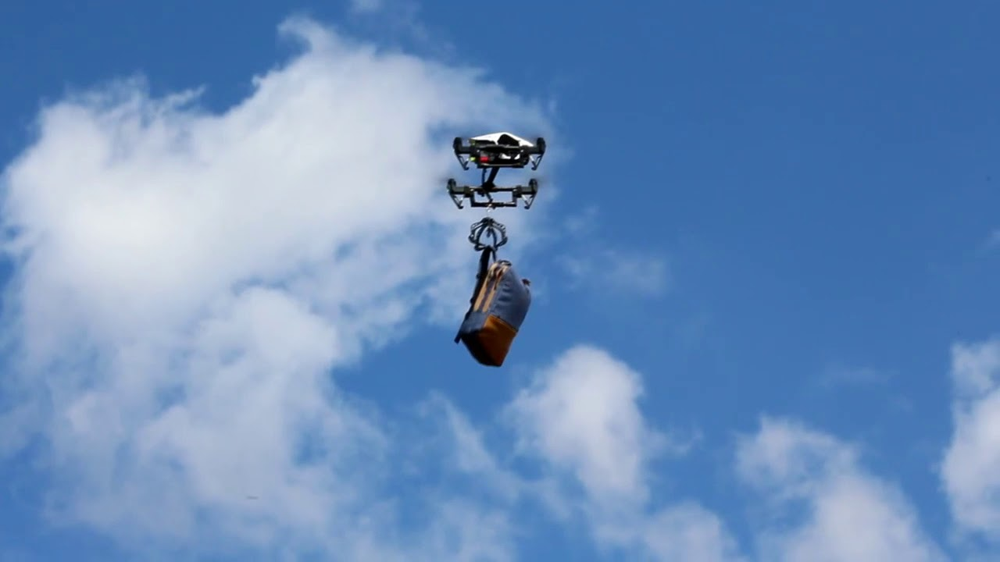
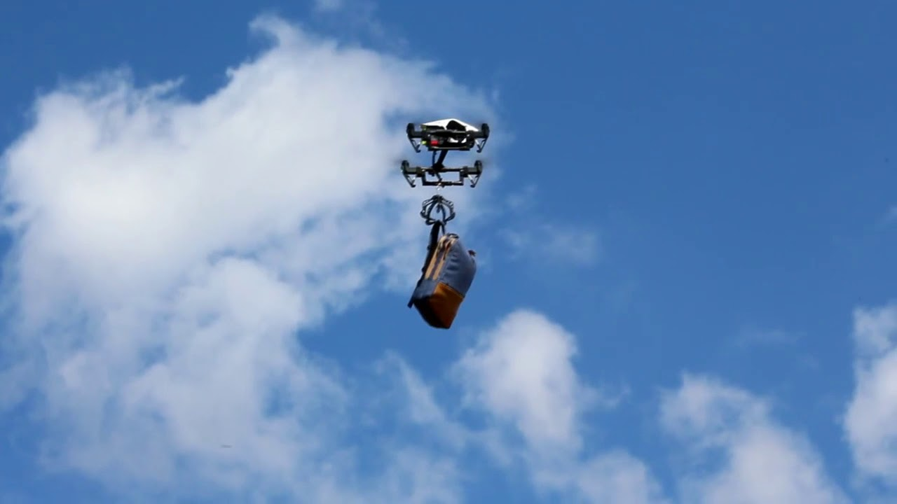

Sobre o Projeto:
Redução do número de lixeiros em um serviço mal pago e mal visto
A profissão de lixeiro, infelizmente, é muitas vezes subvalorizada e mal remunerada, apesar de sua importância crucial para a manutenção da higiene e saúde pública. A diminuição do número de lixeiros, porém, pode ser vista como uma oportunidade para reestruturar e valorizar a profissão. A ideia é não apenas reduzir a quantidade de trabalhadores na coleta de lixo, mas também investir em melhorias salariais e na valorização da profissão para os que permanecerem. Com uma menor quantidade de trabalhadores, a implementação de novas tecnologias e métodos de trabalho se torna essencial, podendo resultar em uma maior eficiência e melhores condições de trabalho.
Incentivo à reciclagem
A diminuição dos lixeiros deve ser acompanhada por um aumento significativo na conscientização e prática da reciclagem pela população. A educação ambiental deve ser intensificada, ensinando a importância de separar corretamente os resíduos recicláveis dos orgânicos e não recicláveis. Programas de reciclagem eficazes não só reduziriam a quantidade de lixo destinada a aterros, mas também diminuiriam a carga de trabalho dos lixeiros, tornando o processo de coleta mais eficiente e seguro.
Eliminação de lesões e machucados causados por objetos cortantes no lixo
Um dos grandes riscos para os trabalhadores de coleta de lixo são as lesões provocadas por objetos cortantes ou perfurantes mal descartados. Para resolver esse problema, é fundamental educar a população sobre a importância de embalar corretamente esses itens e, idealmente, criar pontos de coleta específicos para resíduos perigosos. Isso não apenas protegeria os trabalhadores, mas também reduziria os custos com cuidados médicos e afastamentos por lesões, contribuindo para uma força de trabalho mais saudável e produtiva.
Implementação de drones na coleta de lixo
Com o avanço da tecnologia, os drones podem ser programados e utilizados para auxiliar na coleta de lixo, especialmente em áreas de difícil acesso ou em grandes centros urbanos onde a logística é mais complexa. Os drones podem ser equipados com câmeras e sensores para identificar e coletar resíduos de maneira eficiente. Isso não apenas aumentaria a eficiência do processo de coleta, mas também reduziria a necessidade de intervenção humana direta, minimizando os riscos de acidentes e doenças.
Aumento da higiene e segurança dos trabalhadores
Com a utilização de tecnologias avançadas como drones e sistemas automatizados de coleta de lixo, os trabalhadores teriam menos contato direto com os resíduos. Isso resultaria em um aumento significativo da higiene e segurança dos trabalhadores. Além disso, a redução do contato direto com o lixo diminuiria a exposição a agentes patogênicos e produtos químicos nocivos, melhorando a saúde geral dos trabalhadores e reduzindo o absenteísmo devido a doenças ocupacionais.
A reestruturação do sistema de coleta de lixo, com a redução do número de lixeiros e a incorporação de tecnologias avançadas, representa uma oportunidade para transformar a maneira como lidamos com os resíduos. Com um maior foco na reciclagem, educação ambiental, e a implementação de drones, podemos criar um sistema mais eficiente, seguro e sustentável. Além disso, ao valorizar e melhorar as condições de trabalho dos lixeiros, estaremos não apenas protegendo a saúde e segurança desses profissionais essenciais, mas também contribuindo para a construção de uma sociedade mais consciente e responsável ambientalmente.
Materiais Necessários
- Drones
- Programadores
- Garras para Conectar nos Drones
- Bastante Dinheiro
- Garra
- Microcontrolador
- Servomotor
- Impressora 3D

 
